Team TIDYBOY
Biointelligence Lab, Seoul National University
Autonomous Robotics and Artificial Intelligence Lab, Pusan National University
Selected Publications
HAPFI: History-Aware Planning based on Fused Information (ICRA 2024)
- Suyeon Shin*, Sujin Jeon* and Byoung-Tak Zhang
- published in Proceedings of the 2024 IEEE International Conference on Robotics and Automation
-
Abstract: This paper propose History-Aware Planning based on Fused Information(HAPFI), effectively leveraging the historical data from diverse modalities that agents collect while interacting with the environment.
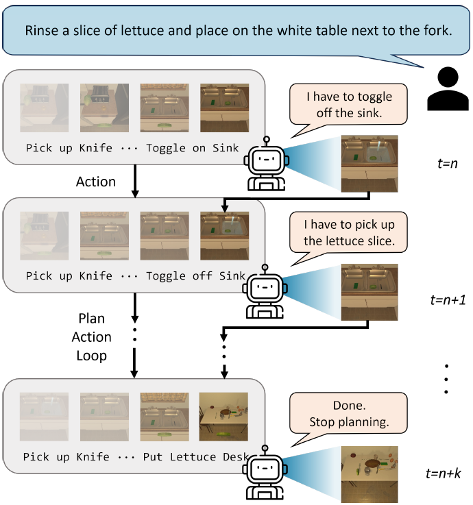
Multi-Object RANSAC: Efficient Plane Clustering method in a Clutter (ICRA 2024)
- Seunghyeon Lim, Youngjae Yoo, Lee Jun Ki and Byoung-Tak Zhang
- published in Proceedings of the 2024 IEEE International Conference on Robotics and Automation
-
Abstract: This paper propose a novel method for plane clustering specialized in cluttered scenes using an RGBD camera and validate its effectiveness through robot grasping experiments.

PROGrasp: Pragmatic Human-Robot Communication for Object Grasping (ICRA 2024)
- Gi-Cheon Kang, Junghyun Kim, Jaein Kim and Byoung-Tak Zhang
- published in Proceedings of the 2024 IEEE International Conference on Robotics and Automation
-
Abstract: This paper introduce a new IOG task, Pragmatic-IOG, and the corresponding dataset, Intention-oriented Multi-modal Dialogue (IM-Dial).
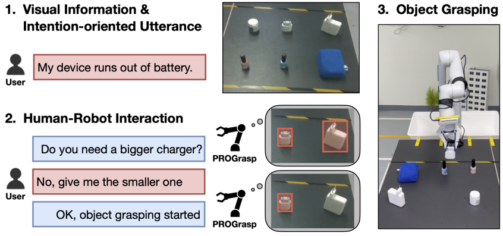
GVCCI: Lifelong Learning of Visual Grounding for Language-Guided Robotic Manipulation (IROS 2023)
- Junghyun Kim, Gi-Cheon Kang, Jaein Kim, Suyeon Shin and Byoung-Tak Zhang
- published in Proceedings of IEEE/RSJ International Conference on Intelligent Robots and Systems
-
Abstract: This paper propose Grounding Vision to Ceaselessly Created Instructions (GVCCI), a lifelong learning framework for LGRM, which continuously learns VG without human supervision.
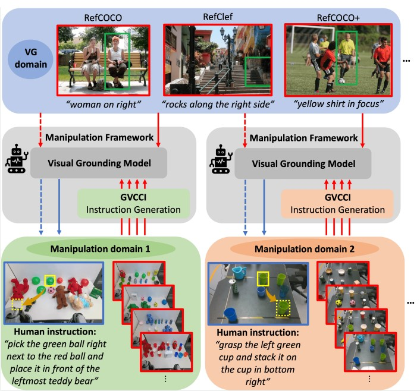
The Dialog Must Go On:
Improving Visual Dialog via Generative Self-Training (CVPR 2023)
- Gi-Cheon Kang, Sungdong Kim, Jin-Hwa Kim, Donghyun Kwak and Byoung-Tak Zhang
- published in Proceedings of the IEEE/CVF Conference on Computer Vision and Pattern Recognition (CVPR 2023)
-
Abstract: This paper presents a semi-supervised learning approach for visuallygrounded dialog, called Generative Self-Training (GST), to leverage unlabeled images on the Web.
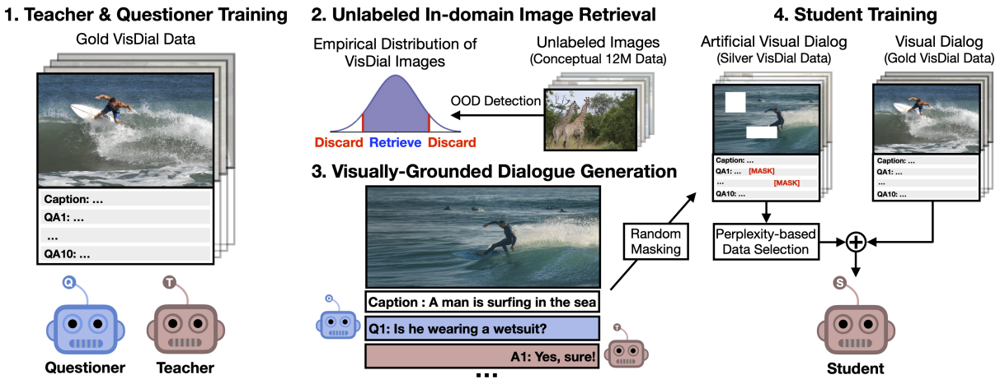
Robust Map Fusion with Visual Attention Utilizing Multi-agent Rendezvous (ICRA 2023)
- Jaein Kim, Dong-Sig Han and Byoung-Tak Zhang
- published in Proceedings of the 2023 IEEE International Conference on Robotics and Automation
-
Abstract: This work proposes a novel map fusion system which robustly fuses local maps in challenging rendezvous that lack shared information. Our system utilizes the single visual perception from rendezvous and estimates the relative pose between agents with the DOPE.
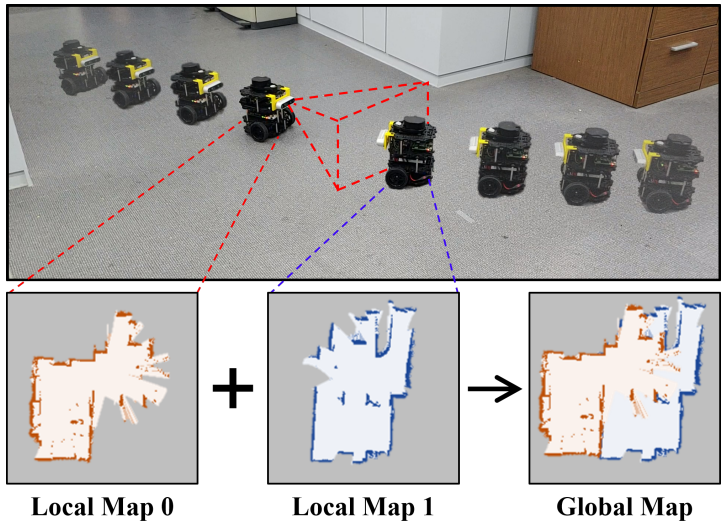
EXOT: Exit-aware Object Tracker for Safe Robotic Manipulation of Moving Object (ICRA 2023)
- Hyunseo Kim, Hye Jung Yoon, Minji Kim, Dong-Sig Han and Byoung-Tak Zhang
- published in Proceedings of the 2023 IEEE International Conference on Robotics and Automation
-
Abstract: This paper propose the EXit-aware Object Tracker (EXOT) on a robot hand camera that recognizes an object’s absence during manipulation. The robot decides whether to proceed by examining the tracker’s bounding box output containing the target object.
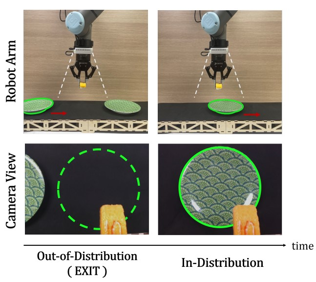
From Scratch to Sketch: Deep Decoupled Hierarchical Reinforcement Learning for Robotic Sketching Agent (ICRA 2022)
- Ganghun Lee, Minji Kim, Minsu Lee and Byoung-Tak Zhang
- published in Proceedings of the 2022 IEEE International Conference on Robotics and Automation
-
Abstract: This paper present an automated learning framework for a robotic sketching agent that is capable of training stroke-based rendering and motor control simultaneously.
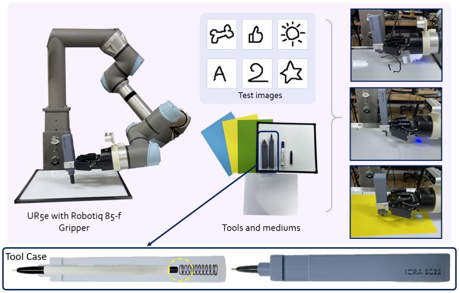
Robust Imitation via Mirror Descent Inverse Reinforcement Learning (NeurIPS 2022)
- Dong-Sig Han, Hyunseo Kim, Hyundo Lee, Je-Hwan Ryu and Byoung-Tak Zhang
- published in Advances in Neural Information Processing Systems 35
-
Abstract: This paper proposes to predict a sequence of reward functions, which are iterative solutions for a constrained convex problem.
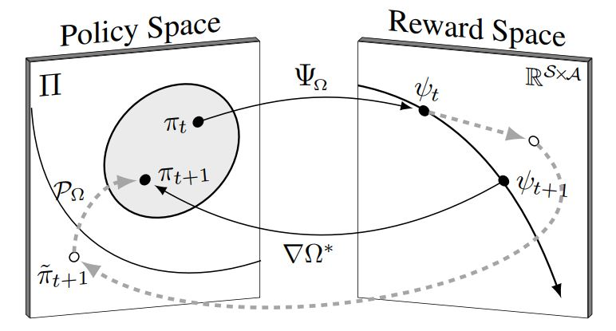
PlaceNet: Neural Spatial Representation Learning with Multimodal Attention (IJCAI 2022)
- Chung-Yeon Lee, Youngjae Yoo and Byoung-Tak Zhang
- published in 2022 International Joint Conference on Artificial Intelligence
-
Abstract: This paper present PlaceNet, a neural representation that learns through random observations in a self-supervised manner, and represents observed scenes with triplet attention using visual, topographic, and semantic cues.
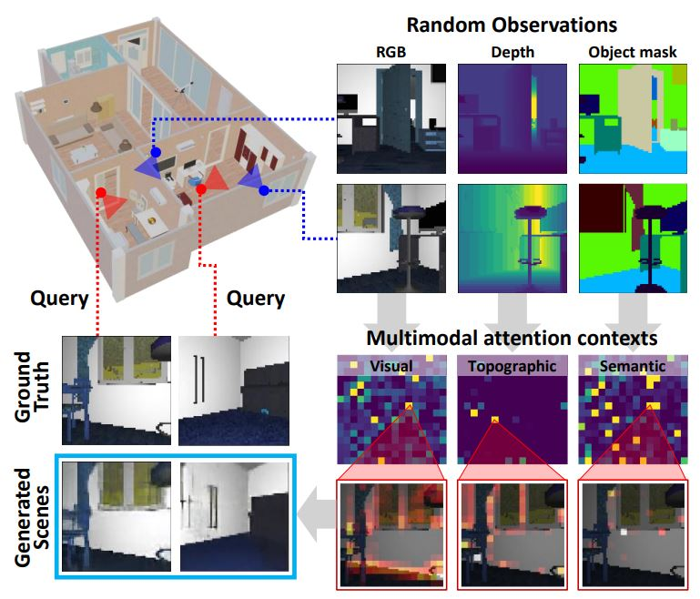
Multimodal Anomaly Detection Based on Deep Auto-Encoder for Object Slip Perception of Mobile Manipulation Robots (ICRA 2021)
- Youngjae Yoo, Chung-Yeon Lee and Byoung-Tak Zhang
- published in Proceedings of the 2021 IEEE International Conference on Robotics and Automation
-
Abstract: This paper present an anomaly detection method that utilizes multisensory data based on a deep autoencoder model. That integrates heterogeneous data streams collected from various robot sensors.
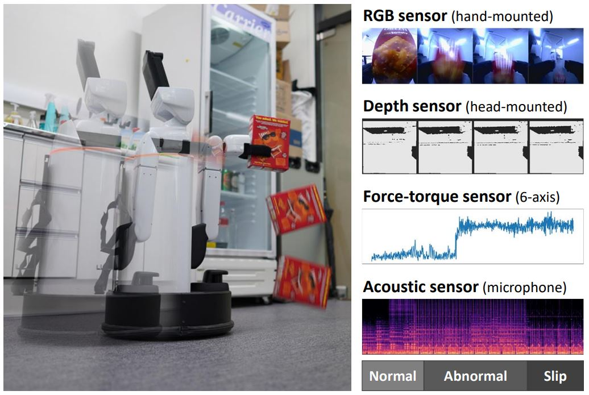
Goal-Aware Cross-Entropy for Multi-Target Reinforcement Learning (NeurIPS 2021)
- Kibeom Kim, Min Whoo Lee, Yoonsung Kim, Je-Hwan Ryu, Minsu Lee and Byoung-Tak Zhang
- published in Advances in Neural Information Processing Systems 34
-
Abstract: This paper propose goal-aware cross-entropy (GACE) loss, that can be utilized in a self-supervised way using auto-labeled goal states alongside reinforcement learning.
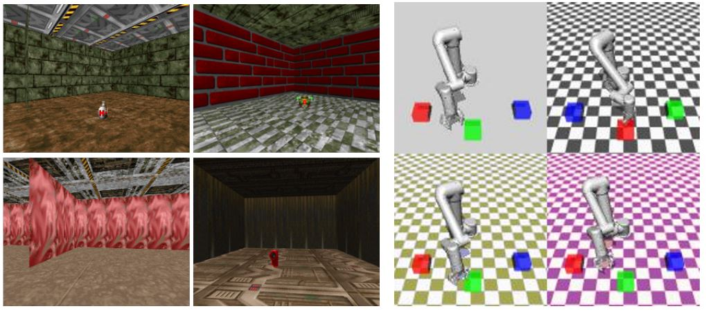
Hypergraph Attention Networks for Multimodal Learning (CVPR 2020)
- Eun-Sol Kim, Woo Young Kang, Kyoung-Woon On, Yu-Jung Heo and Byoung-Tak Zhang
- published in IEEE Conference on Computer Vision & Pattern Recognition
-
Abstract: This paper propose Hypergraph Attention Networks (HANs), which define a common semantic space among the modalities with symbolic graphs and extract a joint representation of the modalities based on a co-attention map constructed in the semantic space.
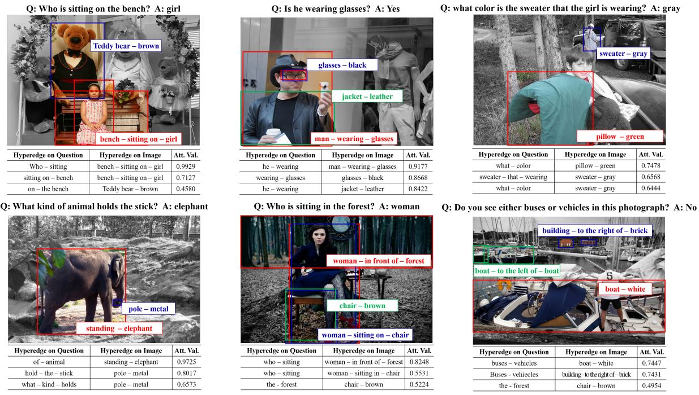
Perception-action-learning system for mobile social-service robots using deep learning (AAAI 2018)
- Beom-Jin Lee, Jinyoung Cho, Chung-Yeon Lee, Kyung-Wha Park, Sungjun Choi, Cheolho Han, Dong-Sig Han, ... , and Byoung-Tak Zhang
- published in AAAI-18 Demonstrations Program
-
Abstract: This paper introduce a robust integrated perception-action-learning system for mobile social-service robots which significantly improves the performance in solving social service tasks
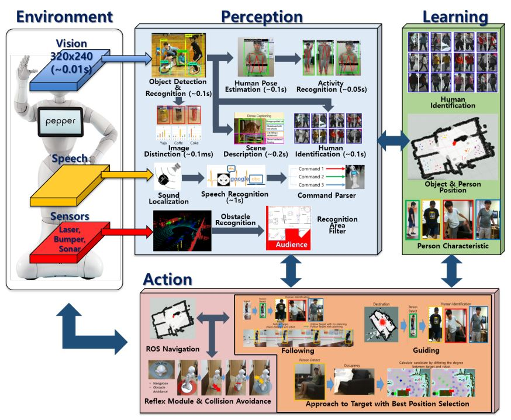
Robust Human Following by Deep Bayesian Trajectory Prediction for Home Service Robots (ICRA 2018)
- Beom-Jin Lee, Jinyoung Cho, Christina Baek and Byoung-Tak Zhang
- published in Proceedings of the 2018 IEEE International Conference on Robotics and Automation
-
Abstract: This paper present a robust human following system that has the extendability to commercial service robot platforms having a RGB-D camera.
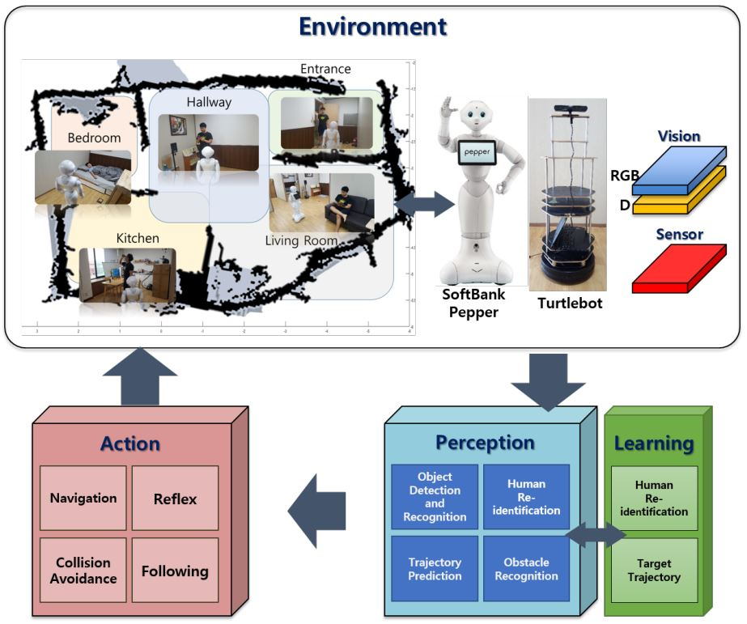
Related Works
International Publications
Korean Publications
- Unveiling the Significance of Toddler-Inspired Reward Transition in Goal-Oriented Reinforcement Learning, J. Park, H.-B. Yoo, Y. Kim, M.-W. Lee, K. Kim, W.-S. Choi, M. Lee, B.-T. Zhang, In Proceedings of the 38th Annual AAAI Conference on Artificial Intelligence (AAAI 2024), 2024. (oral presentation) Paper
- DUEL: Duplicate Elimination on Active Memory for Self-supervised Class-imbalanced Learning, W.-S. Choi, H. Lee, D.-S. Han, J. Park, H. Koo, B.-T. Zhang, In Proceedings of the 38th Annual AAAI Conference on Artificial Intelligence (AAAI 2024), 2024. Paper
- Video Turing Test: A first step towards human-level AI, M. Lee, Y.-J. Heo, S. Choi, W.-S. Choi, B.-T. Zhang, AI Magazie, 44, 537-554, 2023. Paper
- Neural Collage Transfer: Artistic Reconstruction via Material Manipulation, G. Lee, M. Kim, Y. Lee, M. Lee, B.-T. Zhang, Proceedings of the IEEE/CVF International Conference on Computer Vision (ICCV), 2023, pp. 2394-2405 Paper
- Learning Geometry-aware Representations by Sketching, H. Lee, I. Hwang, H. Go, W.-S. Choi, K. Kim, B.-T. Zhang, In Proceedings of the IEEE/CVF Conference on Computer Vision and Pattern Recognition (CVPR 2023), June 2023. Paper
- On Discovery of Local Independence over Continuous Variables via Neural Contextual Decomposition, I. Hwang, Y. Kwak, Y.-J. Song, B.-T. Zhang*, S. Lee*, Conference on Causal Learning and Reasoning (CLeaR), April 2023. (* equal contribution) Paper
- Team Tidyboy at the WRS 2020: a modular software framework for home service robots, T. Kang, D. Song, J. Yi, J. Kim, C. Lee, Y. Yoo, M. Kim, ... , Advanced Robotics, 2022 Paper
- Modal-specific Pseudo Query Generation for Video Corpus Moment Retrieval, M. Jung, S. Choi, J. Kim, J.-H. Kim, B.-T. Zhang, In Proceedings of the 2022 Conference on Empirical Methods in Natural Language Processing (EMNLP 2022), December 2022. Paper
- Task planning and motion control problems of service robots in human-centered environments, H. Moon, B.-T Zhang, and C Nam, Intelligent Service Robotics, 2022 Paper
- TARGET-ORIENTED REINFORCEMENT LEARNING METHOD AND APPARATUS FOR PERFORMING THE SAME B.-T. Zhang, K Kim, M Lee, MW Lee, Y Kim - US Patent App. 17/427,957, 2022 Patent
- Smooth-Swap: A Simple Enhancement for Face-Swapping with Smoothness, J.-S.Kim, J.-H.Lee, B.-T.Zhang, The IEEE Conference on Computer Vision and Pattern Recognition (CVPR 2022), 2022. Paper
- SelecMix: Debiased Learning by Contradicting-pair Sampling, I.-W. Hwang, S.-J. Lee, Y.-H. Kwak, S.-J. Oh, D.Teney, J.-H. Kim, B.-T. Zhang, Advances in Neural Information Processing Systems 35 (NeurIPS 2022), 2022. Paper
- Toddler-Guidance Learning: Impacts of Critical Period on Multimodal AI Agents, J. -S. Park, K. -Y. Park, H. -S. Oh, G. -H. LEE, M. -S. LEE, Y. -K. Lee, B. -T. Zhang, 23rd ACM International Conference on Multimodal Interaction (ICMI 2021), 2021. (oral presentation, accept ratio= 13%) Paper
- Passive Versus Active: Frameworks of Active Learning for Linking Humans to Machines, J. Lim, H. Jo, B.-T. Zhang, J. Park, In Proceedings of the 43rd Annual Meeting of the Cognitive Science Society (CogSci 2021), 2021. Paper
- Message Passing Adaptive Resonance Theory for Online Active Semi-supervised Learning, T. Kim, I. Hwang, H.-D. Lee, H. Kim, W.-S. Choi, J. Lim, B.-T. Zhang, The 38th International Conference on Machine Learning (ICML 2021), 2021. Paper
- Effect of Active Pre-Learning Activities on Humans and Machines. J.-S. Lim, H.-Y. Jo, B.-T. Zhang, and J.-Y. Park, In Proceedings of the 42nd Annual Meeting of the Cognitive Science Society (CogSci 2020), 2020 Paper
- Visual perception framework for an intelligent mobile robot, C.-Y. Lee, H.-D. Lee, I.-J. Hwang, B.-T. Zhang, 2020 17th International Conference on Ubiquitous Robots, 2020 Paper
- Label Propagation Adaptive Resonance Theory for Semi-Supervised Continuous Learning, T. Kim, I. Hwang, G.-C. Kang, W.-S. Choi, H. Kim and B.-T. Zhang, In Proceedings of the 45th International Conference on Acoustics, Speech, and Signal Processing (ICASSP 2020), May 2020. Paper
- CoDraw: Collaborative drawing as a testbed for grounded goal-driven communication, J.-H. Kim, N. Kitaev, X. Chen, M. Rohrbach, B.-T. Zhang, Y. Tian, and D. Batra, In Proceedings of the 57th Annual Meeting of the Association for Computational Linguistics (ACL 2019), pp. 6495-6513, 2019. Paper
- Simulating problem difficulty in arithmetic cognition through dynamic connectionist models, S. Cho, J. Lim, C. Hickey, J. A. Park, and B.-T. Zhang, In Proceedings of the 17th International Conference on Cognitive Modeling (ICCM 2019), pp. 29-34, 2019. Paper
- Problem difficulty in arithmetic cognition: Humans and connectionist models, S. Cho, J. Lim, C. Hickey, and B.-T. Zhang, In Proceedings of the 41st Annual Meeting of the Cognitive Science Society (CogSci 2019), pp. 1506-1512, 2019. Paper
- VLAS: A vision-language-action integrated system for mobile social service robot, K.-W. Park, J.-Y. Choi, B.-J. Lee, C.-Y. Lee, I. Hwang, and B.-T. Zhang, Federated AI for Robotics Workshop (FAIR) 2018, IJCAI 2018, 2018 Paper
Korean Publications
- Robust Arm Robot Grasping System Using Greedy Grasping Algorithms, J.-O. Kim, H.-J. Yoon, Y.-S. Park and B.-T. Zhang, Proceedings of the Korean Information Science Society Conference (KSC 2023), 2023 Paper
- Background Removal and Plane Clustering methods for Grasping Points Estimation using the Robotic Suction Gripper, S.-H. Lim, Y.-J. Yoo and B.-T. Zhang, Proceedings of the Korean Information Science Society Conference (KCC 2023), 2023 Paper
- Visual Perception-Based Assistive Mobile Robot System, H.-J. Yoon, J.-O. Kim, Y.-S. Park and B.-T. Zhang, Proceedings of the Korean Information Science Society Conference (KCC 2023), 2023 Paper
- Background Removal and Plane Clustering methods for Grasping Points Estimation using the Robotic Suction Gripper, S.-H. Lim, Y.-J. Yoo and B.-T. Zhang, Proceedings of the Korean Information Science Society Conference (KCC 2023), 2023 Paper
- RGB-D based 3D Unseen Object Detection for Robust Grasping of Mobile Manipulation Robot, Y.-J. Yoo, S.-J. Jeon and B.-T. Zhang, Proceedings of the Korean Information Science Society Conference (KCC 2023), 2023 Paper
- Autonomous Recycling Robot System Using Heuristic Grasping Algorithms, J.-O. Kim and B.-T. Zhang, Proceedings of the Korean Information Science Society Conference (KCC 2023), 2023 Paper
- A Simulated Learning Environment with Load Dataset Generation for Depalletizers, J.-M. Park, Y.-J. Yoo and B.-T. Zhang, Proceedings of the Korean Information Science Society Conference (KCC 2023), 2023 Paper
- Product Identification System based on Image FeatureSimilarity with Learning-free Model, Y.-J. Yoo, H.-J. Yoon, J.-O. Kim, Y.-S. Park, and B.-T. Zhang, Journal of Logistics Science & Technology, 3(2),36~55, 2022 Paper
- Cashier Free Counter System Using Artificial Intelligence with Robot Arm, H.-J. Yoon, Y.-S. Park, J.-O. Kim, Y.-J. Yoo and B.-T. Zhang, Proceedings of the Korean Information Science Society Conference (KSC 2022), 2022 Paper
- Indoor Path Planner of Mobile Manipulator Robot for Obstacle Avoidance and Removal, S.-H. Lim, Y.-J. Yoo, and B.-T. Zhang, Proceedings of the Korean Information Science Society Conference (KCC 2022), 2022 Paper
- Reset-free Multi-agent Reinforcement Learning Using Reversibility Estimation, M.-J.Kim, G.-H.Lee, and B.-T. Zhang, Proceedings of the Korean Information Science Society Conference (KCC 2022), 2022 Paper
- RSR: A Real-to-Sim-to-Real Robot Manipulation System Using VR, J.-M. Park, S.-J. Jeon, and B.-T. Zhang, Proceedings of the Korean Information Science Society Conference (KSC 2021), 2021 Paper
- Adaptive Spatial Comprehension via Object Relationship Learning with Home Robot, J.-H. Kim, S.-J. Lee, Y.-J. Yoo, and B.-T. Zhang, Proceedings of the Korean Information Science Society Conference (KSC 2021), 2021 Paper
- Deep RL-based Optimal Path Planning and Obstacle Avoidance for Mobile Robots, Y.-J. Song, Y.-J. Yoo, C.-Y. Lee, and B.-T. Zhang, Proceedings of the Korean Information Science Society Conference (KCC 2021), 2021 Paper
- Reset-free Competitive reinforcement learning to learn robotic manipulation skills, M.-J. Kim, G.-H. Lee, K.-B. Kim, M.-S. Lee, and B.-T. Zhang, Proceedings of the Korean Information Science Society Conference (KCC 2021), 2021 Paper
- One-Shot Object Detection based Service Application for Mobile Robot, S.-J. Lee, Y.-J. Yoo, and B.-T. Zhang, Proceedings of the Korean Information Science Society Conference (KCC 2021), 2021 Paper
- Multi-robot Map Merging with Pose Estimation and Image Generation based on Neural Network, J.-I. Kim, H.-D. Lee, G.-H. Lee, Y.-S. Kim, D.-S. Han, and B.-T. Zhang, Proceedings of the Korean Information Science Society Conference (KSC 2020), 2020 Paper
- Autoencoder-based Multimodal Anomaly Detection for Mobile Manipulation Robots, Y.-J. Yoo, C.-Y. Lee, and B.-T. Zhang, Proceedings of the Korean Information Science Society Conference (KCC 2020), 2020 Paper
- Extrinsic Calibration for Multiple Cameras without Target Locations Y.-S. Kim and B.-T. Zhang, 2019 Proceedings of the Korean Information Science Society Conference (KSC 2019), 2019 Paper
- Learning with target classification auxiliary task for semantic navigation, K.-B. Kim, and B.-T. Zhang, 2019 Proceedings of the Korean Information Science Society Conference (KSC 2019), 2019 Paper
- Best Base Placement and Safe Arm Trajectory Execution using Reachability for Domestic Robots to Optimally Interact with Objects, J.-I. Kim, B.-J. Lee, and B.-T. Zhang, 2019 Proceedings of the Korean Information Science Society Conference (KSC 2019), 2019 Paper
- An Automatic Dough Molding System based on Integration of Deep Learning Techniques Applicable to Commercial Manipulator Robots, J.-I. Kim, B.-J. Lee, and B.-T. Zhang, 2019 Proceedings of the Korean Information Science Society Conference (KCC 2019), 2019 Paper
- Object-Aware Feature Augmentation for Robust Visual SLAM of Mobile Robots, H.-D Lee, C.-Y. Lee, I.-J. Hwang, and B.-T. Zhang, 2018 Proceedings of the Korean Information Science Society Conference (KSC 2018), 2018 Paper
- Human Recognition and Tracking for Mobile Robot using Visual Feature-based Person Re-identification Model, I.-J. Hwang, C.-Y. Lee, H.-D Lee, and B.-T. Zhang, 2018 Proceedings of the Korean Information Science Society Conference (KSC 2018), 2018 Paper